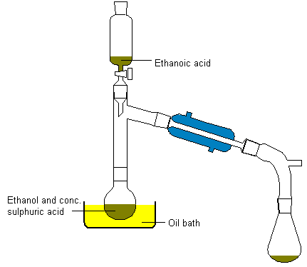

Synthesis of Ethyl Acetate
[ Back to the Chemistry Archive ]
This procedure could/should probably be scaled up...
Procedure
Ethyl ethanoate may also be prepared on a larger scale as follows.
Add about 10ml of concentrated sulphuric acid to an equal volume of
ethanol in a distillation flask (heat is evolved), together with a few
pieces of porous pot to ensure smooth boiling later. Connect a condenser
and a dropping funnel to the flask as shown in the diagram below and
placein the dropping funnel 20ml of ethanol with an equal volume of
ethanoic acid. Heat the oil bath to about 150°C and slowly add the ethanol-acid
mixture. Ethyl ethanoate distills over. It will contain ethanol and
ethanoic acid as impurities and these can be removed by shaking the
distillate with sodium carbonate solution to remove the ethanoic acid
and calcium chloride solution to remove the ethanol. The ethyl ethanoate
can then be dried over fused calcium chloride and obtained pure by distillation.

[contributed by Mountain_girl]:
Mix 50ml (40g) EtOH and 50ml (52g) GAA thoroughly in a
250ml rbf and add slowly with cooling and shaking, 10ml (18.5g) of concentrated
sulphuric acid. Ensure that the liquid is homogenous, then fit the flask
with a reflux condenser and boil gently for 10min.
Now distil off about 2/3 of the mixture and then transfer the distillate
to a separation funnel. Add about 25ml of 30% NaCO3 solution, cork the
funnel and shake carefully in order to neutralise and remove the free
acetic and sulphurous acids present in the crude ethyl acetate: much
CO2 is evolved during the shaking, therefore release the pressure in
the funnel at frequent intervals. Allow the two layers to separate,
and carefully run off and reject the lower aqueous layer, ensuring that
the NaCO3 solution is removed as completely as possible. Then prepare
a solution of 25g anhydrous CaCl2 in 25ml water, add it to the ethyl
acetate in the funnel and again shake vigorously. The CaCl2 solution
removes any EtOH still present. Allow the mixture to separate and again
remove the lower aqeous layer as completely as possible. Then run the
ethyl acetate into a small conical flask, add a few lumps of granular
CaCl2 and shake occasionally.
After about 20min when the liquid should be dry, filter it through a
small fluted filter paper into a 100ml distillation flask attached to
a condenser. Add some boiling chips and distill. Some ether is always
formed as a byproduct and is carefully (i.e. slowly) distilled off as
a preliminary and separate fraction boiling at 35-40°C.
Collect the portion of the distillate boiling at 74-79°C, rejecting a
small fraction boiling immediately below this range. Yield 50g.
Ethyl acetate is a colourless liquid with b.p. 77°C and density 0.92g/ml
and a pleasant apple-like odour, and is only slightly soluble in water.
References
[1] D. N Underwood and D.E. Webster, Chemistry, 4th Ed. p 457-458
(1975)
[2] Practical Organic Chemistry, F.G. Mann & B.C. Saunders,
4th Ed.,pg. 96
|